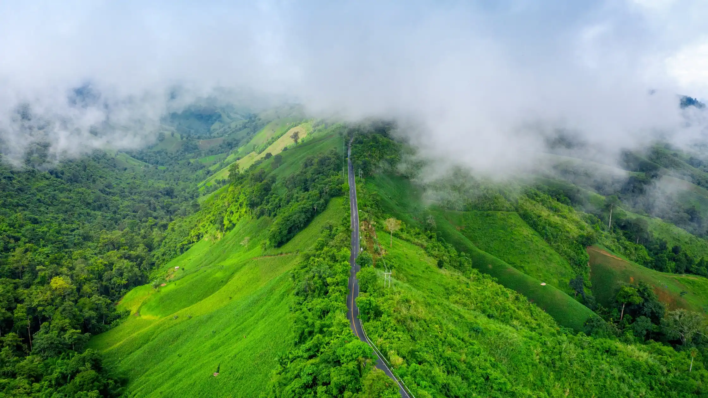

Best Time to Visit Sakleshpur for a Perfect Nature Vacation
- Home
- Blog
Nestled in the lush Western Ghats of Karnataka, Sakleshpur is a hidden gem for nature lovers, travelers, and anyone looking to escape the busy city life. Known for its green hills, coffee plantations, misty landscapes, and peaceful surroundings, Sakleshpur has become one of the most popular travel destinations in South India. Whether you want a relaxing weekend getaway, an adventurous trek, or simply a quiet place to reconnect with nature, Sakleshpur offers the perfect environment for all kinds of travelers.
Many visitors searching for a calm and scenic stay often choose Kaduhithlu Resort because it allows them to experience the beauty of nature while enjoying comfort and tranquility. Surrounded by greenery and natural landscapes, the resort offers a peaceful retreat for those who want to slow down and enjoy the charm of the Western Ghats.
However, before planning your trip, it is important to know the best time to visit Sakleshpur. The weather here changes beautifully throughout the year, and each season offers a unique experience. From misty monsoons and cool winters to pleasant summers, every season has something special for travelers.
For those who want to truly experience the peaceful beauty of Sakleshpur, a stay at Kaduhithlu Resort can make the trip even more memorable. With its scenic surroundings and calm atmosphere, it provides the perfect base for exploring this charming hill destination.
In this guide, we will explore the best time to visit Sakleshpur, what each season offers, and how you can plan the perfect nature vacation.
Understanding the Climate of Sakleshpur
Sakleshpur enjoys a pleasant climate throughout most of the year due to its location in the Western Ghats. The region is known for its fresh air, green landscapes, and cool temperatures compared to nearby cities.
The climate in Sakleshpur can be divided into three main seasons:
- Summer (March to May)
- Monsoon (June to September)
- Winter (October to February)
Each season offers a different travel experience, depending on whether you prefer misty landscapes, clear mountain views, or adventurous outdoor activities.
Let’s explore each season in detail.
Visiting Sakleshpur During Summer (March to May)
Summer in Sakleshpur is quite pleasant compared to many other places in Karnataka. While cities like Bangalore or Mangalore experience rising temperatures, Sakleshpur remains relatively cooler due to its elevation and greenery.
Weather During Summer
During summer, temperatures usually range between 20°C and 32°C, making it comfortable for sightseeing and outdoor activities.
The mornings and evenings are especially refreshing, while afternoons can be slightly warm but still manageable.
Why Visit Sakleshpur in Summer
Summer is a great time for travelers who want to enjoy nature without heavy rainfall. Some advantages include:
- Clear skies and scenic hill views
- Perfect weather for trekking
- Ideal time for plantation walks
- Comfortable conditions for photography
Popular trekking spots such as Jenukal Gudda and nearby viewpoints become easier to explore during summer.
Travelers who enjoy outdoor activities will find this season ideal for discovering the natural beauty of the region.
Monsoon in Sakleshpur (June to September)
Monsoon is often considered the most magical time to visit Sakleshpur. During these months, the entire region transforms into a lush green paradise.
Weather During Monsoon
Heavy rainfall is common in Sakleshpur during monsoon, with temperatures ranging between 18°C and 25°C.
The rain brings fresh life to the forests, coffee plantations, and waterfalls, creating breathtaking scenery.
Why Monsoon Is Special
Monsoon turns Sakleshpur into a dream destination for nature lovers. During this season you can experience:
- Mist-covered hills
- Flowing waterfalls
- Vibrant green landscapes
- Cool and refreshing climate
Waterfalls such as Magajahalli Falls and nearby forest areas become especially beautiful during monsoon.
However, travelers should be prepared for occasional heavy rains and slippery trekking paths.
For people who enjoy peaceful nature, the monsoon is one of the most memorable times to visit Sakleshpur.
Winter in Sakleshpur (October to February)
Winter is widely considered the best time to visit Sakleshpur for most travelers. The weather becomes cool, pleasant, and ideal for outdoor exploration.
Weather During Winter
Winter temperatures typically range between 15°C and 28°C, making it perfect for sightseeing and adventure activities.
The mornings can be slightly misty, adding a magical atmosphere to the hills.
Why Winter Is the Best Season
Winter offers the perfect balance of comfortable weather and scenic beauty. Travelers visiting during this time can enjoy:
- Clear mountain views
- Comfortable trekking conditions
- Pleasant evenings
- Perfect weather for exploring nature
It is also an excellent time for road trips from Bangalore, as the weather remains cool and refreshing.
Many tourists prefer winter for family vacations, romantic trips, and nature retreats.
Things to Do in Sakleshpur Throughout the Year
Regardless of when you visit, Sakleshpur offers many activities that allow you to enjoy its natural beauty.
Trekking
Sakleshpur is known for its scenic trekking trails. Some popular trekking spots include:
- Jenukal Gudda Peak
- Bisle View Point
- Agni Gudda Hill
These trails offer breathtaking views of forests and mountains.
Coffee Plantation Walks
Sakleshpur is surrounded by coffee estates that provide a unique experience for visitors. Walking through these plantations allows you to learn about coffee cultivation while enjoying the peaceful environment.
Waterfall Visits
Several beautiful waterfalls can be explored near Sakleshpur, especially during monsoon and post-monsoon seasons.
Photography
The misty hills, forest landscapes, and scenic viewpoints make Sakleshpur a paradise for photographers.
Relaxing in Nature
Sometimes the best activity is simply relaxing in the middle of nature, enjoying fresh air and peaceful surroundings.
How to Reach Sakleshpur
Sakleshpur is easily accessible from major cities in Karnataka.
From Bangalore
Distance: Approximately 220 km
Travel options include:
- Car or bike road trip
- Train journey
- Bus services
The road trip from Bangalore to Sakleshpur is especially popular due to its scenic views.
From Mangalore
Distance: Approximately 130 km
Travelers can reach Sakleshpur easily by road within a few hours.
Travel Tips for Visiting Sakleshpur
To make your trip smooth and enjoyable, keep these simple tips in mind:
Pack Comfortable Clothing
Light clothing for daytime and a jacket for evenings is recommended, especially during winter.
Carry Good Footwear
Comfortable walking or trekking shoes are important if you plan to explore hills or forests.
Check Weather Conditions
If visiting during monsoon, be prepared for rain and carry appropriate rain gear.
Plan Outdoor Activities Early
Mornings are usually the best time for trekking, sightseeing, and photography.
Respect Nature
Sakleshpur is known for its natural beauty, so travelers should avoid littering and protect the environment.
Why Sakleshpur Is a Perfect Nature Destination
Sakleshpur stands out among many hill stations because it offers a peaceful environment without heavy commercialization.
Visitors come here to enjoy:
- Fresh mountain air
- Dense forests and plantations
- Scenic viewpoints
- Calm and relaxing surroundings
It is an ideal destination for couples, families, adventure seekers, and nature lovers.
Unlike crowded tourist locations, Sakleshpur provides a quiet retreat where travelers can truly unwind.
FAQs
- What is the best month to visit Sakleshpur?
The best months to visit Sakleshpur are from October to February, when the weather is cool, pleasant, and ideal for sightseeing and outdoor activities.
- Is Sakleshpur good to visit during monsoon?
Yes, Sakleshpur becomes extremely beautiful during monsoon with lush greenery, misty hills, and flowing waterfalls. However, travelers should be prepared for heavy rainfall.
- How far is Sakleshpur from Bangalore?
Sakleshpur is approximately 220 kilometers from Bangalore, and the journey usually takes about 4 to 5 hours by road.
- What are the top attractions in Sakleshpur?
Some popular attractions include Bisle View Point, Manjarabad Fort, Jenukal Gudda Peak, and Magajahalli Waterfalls.
- Is Sakleshpur suitable for a weekend trip?
Yes, Sakleshpur is one of the best weekend getaway destinations near Bangalore, offering scenic nature, trekking trails, and peaceful hill landscapes.
Conclusion
Choosing the best time to visit Sakleshpur depends on the type of experience you are looking for. Summer offers comfortable weather for outdoor activities, monsoon transforms the region into a lush green paradise, and winter provides cool and pleasant conditions perfect for exploring nature.
Each season brings its own charm, making Sakleshpur a destination worth visiting throughout the year. Whether you are planning a relaxing weekend getaway, a nature retreat, or an adventurous trip in the Western Ghats, Sakleshpur promises unforgettable memories.
For travelers seeking a peaceful stay surrounded by greenery, Kaduhithlu Resort provides a wonderful opportunity to experience the beauty of nature while enjoying comfort and relaxation. Its tranquil environment allows guests to truly unwind and reconnect with the natural world.
A stay at Kaduhithlu Resort can enhance your Sakleshpur vacation by offering the perfect blend of scenic surroundings and restful accommodation, making your nature escape even more special.
Related Blog

Best Time to Visit Sakleshpur for a Perfect Nature Vacation
Learn the best time to visit Sakleshpur for a perfect nature vacation with scenic views and pleasant weather.

Why Sakleshpur Is the Best Weekend Getaway from Bangalore
Looking for a refreshing weekend getaway from Bangalore? Visit Sakleshpur for misty mountains.